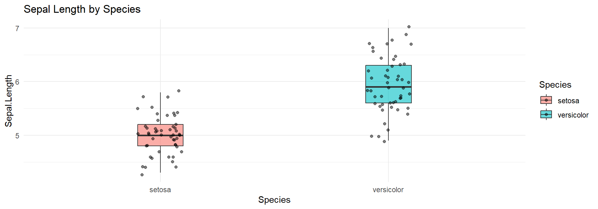
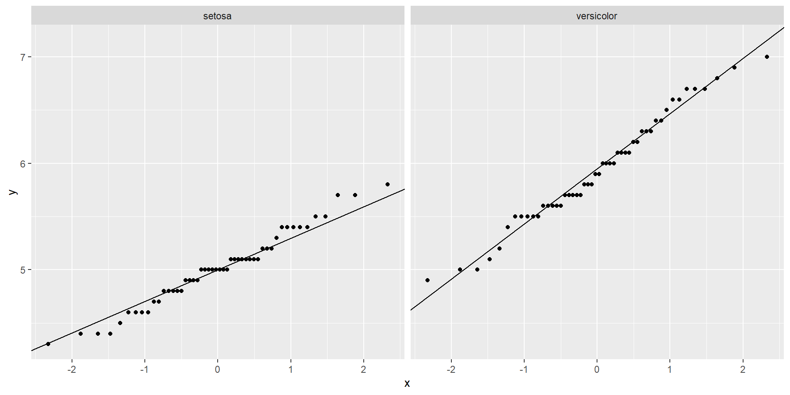
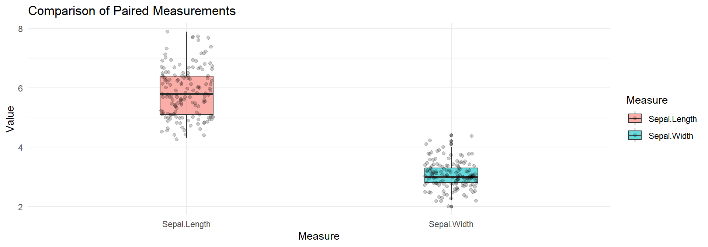
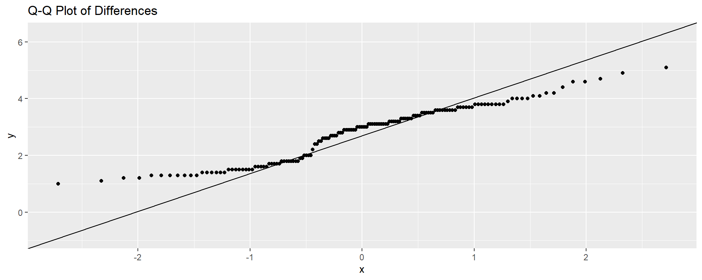
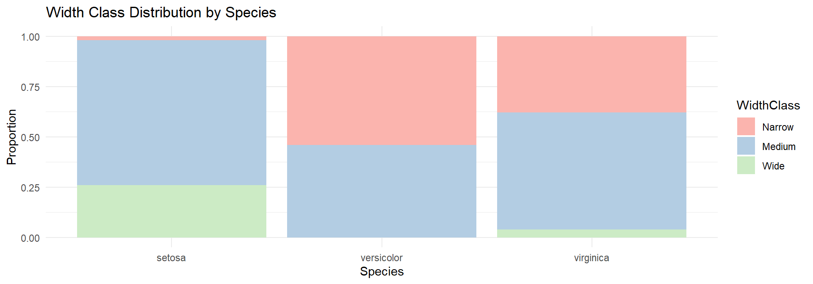
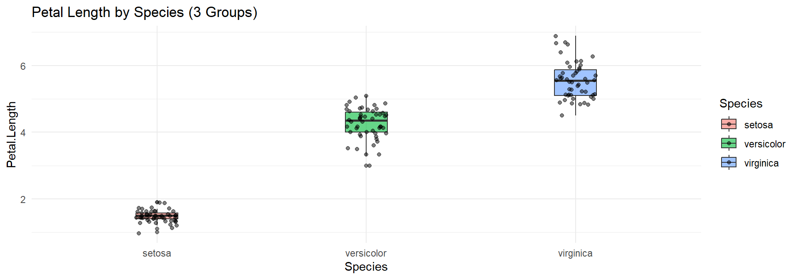
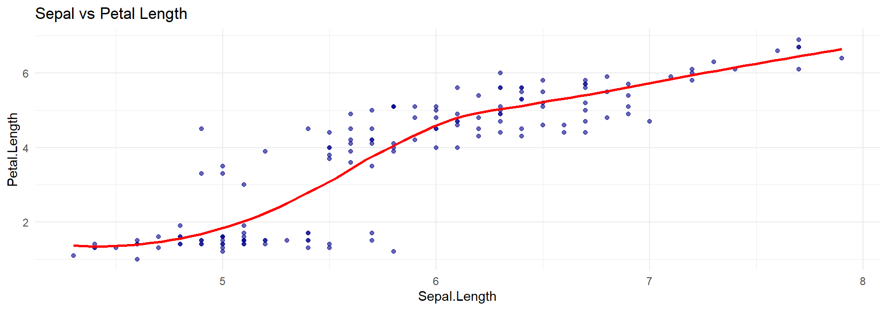

Code
iris2 <- subset(iris, Species %in% c("setosa", "versicolor"))C5025HF
Instead of looking at exact times (values), look at finishing positions (ranks).
Imagine a race between two teams.
Imagine the same runner running twice (Race 1 vs Race 2).
| Design | Parametric | Non-parametric |
|---|---|---|
| 2 independent groups | t-test | Mann–Whitney |
| 2 paired measures | paired t | Wilcoxon signed-rank |
| >2 independent groups | ANOVA | Kruskal–Wallis |
| Correlation | Pearson | Spearman, Kendall |
| 2×2 association | χ² test | Fisher exact |
Compare Sepal.Length between two species. We subset to two species for a t-test:

Shapiro-Wilk normality test
data: iris2$Sepal.Length[iris2$Species == "setosa"]
W = 0.9777, p-value = 0.4595
Shapiro-Wilk normality test
data: iris2$Sepal.Length[iris2$Species == "versicolor"]
W = 0.97784, p-value = 0.4647
Levene's Test for Homogeneity of Variance (center = median)
Df F value Pr(>F)
group 1 8.1727 0.005196 **
98
---
Signif. codes: 0 '***' 0.001 '**' 0.01 '*' 0.05 '.' 0.1 ' ' 1
Welch Two Sample t-test
data: Sepal.Length by Species
t = -10.521, df = 86.538, p-value < 2.2e-16
alternative hypothesis: true difference in means between group setosa and group versicolor is not equal to 0
95 percent confidence interval:
-1.1057074 -0.7542926
sample estimates:
mean in group setosa mean in group versicolor
5.006 5.936
Wilcoxon rank sum test with continuity correction
data: Sepal.Length by Species
W = 168.5, p-value = 8.346e-14
alternative hypothesis: true location shift is not equal to 0
Welch Two Sample t-test
data: Sepal.Length by Species
t = -10.521, df = 86.538, p-value < 2.2e-16
alternative hypothesis: true difference in means between group setosa and group versicolor is not equal to 0
95 percent confidence interval:
-1.1057074 -0.7542926
sample estimates:
mean in group setosa mean in group versicolor
5.006 5.936
Wilcoxon rank sum test with continuity correction
data: Sepal.Length by Species
W = 168.5, p-value = 8.346e-14
alternative hypothesis: true location shift is not equal to 0t-test p-value: <2e-16 Mann–Whitney p-value: 8.35e-14 Compare Sepal.Length vs Sepal.Width for the same flowers. Since these measurements come from the same flower, they are paired.
# Reshape data to long format for plotting
library(tidyr)
iris_long <- pivot_longer(iris,
cols = c("Sepal.Length", "Sepal.Width"),
names_to = "Measure",
values_to = "Value")
ggplot(iris_long, aes(x = Measure, y = Value, fill = Measure)) +
geom_boxplot(alpha = 0.6,width=0.2) +
geom_jitter(width = 0.1, alpha = 0.2) +
theme_minimal() +
ggtitle("Comparison of Paired Measurements")
Shapiro-Wilk normality test
data: diffs
W = 0.94628, p-value = 1.628e-05
Paired t-test
data: iris$Sepal.Length and iris$Sepal.Width
t = 34.815, df = 149, p-value < 2.2e-16
alternative hypothesis: true mean difference is not equal to 0
95 percent confidence interval:
2.627874 2.944126
sample estimates:
mean difference
2.786
Wilcoxon signed rank test with continuity correction
data: iris$Sepal.Length and iris$Sepal.Width
V = 11325, p-value < 2.2e-16
alternative hypothesis: true location shift is not equal to 0
Paired t-test
data: iris$Sepal.Length and iris$Sepal.Width
t = 34.815, df = 149, p-value < 2.2e-16
alternative hypothesis: true mean difference is not equal to 0
95 percent confidence interval:
2.627874 2.944126
sample estimates:
mean difference
2.786
Wilcoxon signed rank test with continuity correction
data: iris$Sepal.Length and iris$Sepal.Width
V = 11325, p-value < 2.2e-16
alternative hypothesis: true location shift is not equal to 0Test independence between Species and a discretised version of Sepal.Width. We bin Sepal.Width:

Narrow Medium Wide
setosa 15.66667 29.33333 5
versicolor 15.66667 29.33333 5
virginica 15.66667 29.33333 5If expected counts are too small → chi-square invalid. - Scan the table: if any expected cell count is < 5, prefer Fisher’s Exact Test.
Pearson's Chi-squared test
data: tab
X-squared = 45.125, df = 4, p-value = 3.746e-09Works even with small expected cell counts.
Fisher's Exact Test for Count Data
data: tab
p-value = 8.429e-11
alternative hypothesis: two.sided
Pearson's Chi-squared test
data: tab
X-squared = 45.125, df = 4, p-value = 3.746e-09
Fisher's Exact Test for Count Data
data: tab
p-value = 8.429e-11
alternative hypothesis: two.sided
Narrow Medium Wide
setosa 15.66667 29.33333 5
versicolor 15.66667 29.33333 5
virginica 15.66667 29.33333 5Compare Petal.Length across all three species.

iris$Species: setosa
Shapiro-Wilk normality test
data: dd[x, ]
W = 0.95498, p-value = 0.05481
------------------------------------------------------------
iris$Species: versicolor
Shapiro-Wilk normality test
data: dd[x, ]
W = 0.966, p-value = 0.1585
------------------------------------------------------------
iris$Species: virginica
Shapiro-Wilk normality test
data: dd[x, ]
W = 0.96219, p-value = 0.1098Levene's Test for Homogeneity of Variance (center = median)
Df F value Pr(>F)
group 2 19.48 3.129e-08 ***
147
---
Signif. codes: 0 '***' 0.001 '**' 0.01 '*' 0.05 '.' 0.1 ' ' 1If either normality or variance equality fails → cannot trust ANOVA F-test.
Df Sum Sq Mean Sq F value Pr(>F)
Species 2 437.1 218.55 1180 <2e-16 ***
Residuals 147 27.2 0.19
---
Signif. codes: 0 '***' 0.001 '**' 0.01 '*' 0.05 '.' 0.1 ' ' 1
Kruskal-Wallis rank sum test
data: Petal.Length by Species
Kruskal-Wallis chi-squared = 130.41, df = 2, p-value < 2.2e-16If significant → perform post-hoc Dunn tests.
Comparison Z P.unadj P.adj
1 setosa - versicolor -5.862997 4.545875e-09 1.363763e-08
2 setosa - virginica -11.418385 3.384664e-30 1.015399e-29
3 versicolor - virginica -5.555388 2.769957e-08 8.309872e-08 Df Sum Sq Mean Sq F value Pr(>F)
Species 2 437.1 218.55 1180 <2e-16 ***
Residuals 147 27.2 0.19
---
Signif. codes: 0 '***' 0.001 '**' 0.01 '*' 0.05 '.' 0.1 ' ' 1
Kruskal-Wallis rank sum test
data: Petal.Length by Species
Kruskal-Wallis chi-squared = 130.41, df = 2, p-value < 2.2e-16Assess the relationship between Sepal.Length and Petal.Length.

Shapiro-Wilk normality test
data: iris$Sepal.Length
W = 0.97609, p-value = 0.01018
Shapiro-Wilk normality test
data: iris$Petal.Length
W = 0.87627, p-value = 7.412e-10
Pearson's product-moment correlation
data: iris$Sepal.Length and iris$Petal.Length
t = 21.646, df = 148, p-value < 2.2e-16
alternative hypothesis: true correlation is not equal to 0
95 percent confidence interval:
0.8270363 0.9055080
sample estimates:
cor
0.8717538
Spearman's rank correlation rho
data: iris$Sepal.Length and iris$Petal.Length
S = 66429, p-value < 2.2e-16
alternative hypothesis: true rho is not equal to 0
sample estimates:
rho
0.8818981
Kendall's rank correlation tau
data: iris$Sepal.Length and iris$Petal.Length
z = 12.647, p-value < 2.2e-16
alternative hypothesis: true tau is not equal to 0
sample estimates:
tau
0.7185159 Better for small samples or many ties.
Interpretation: “There is a strong positive monotonic correlation between sepal length and petal length.”